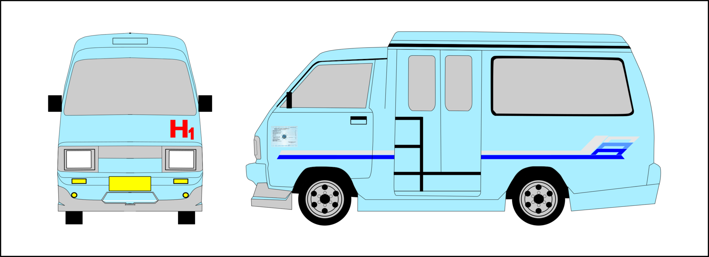
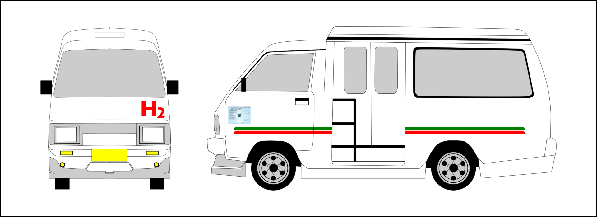
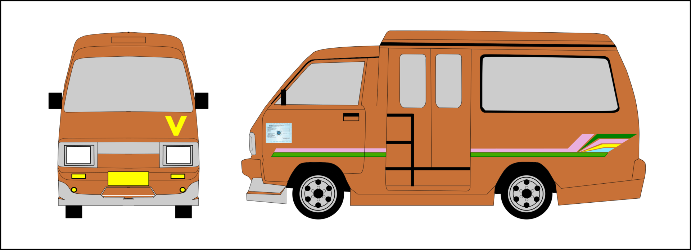
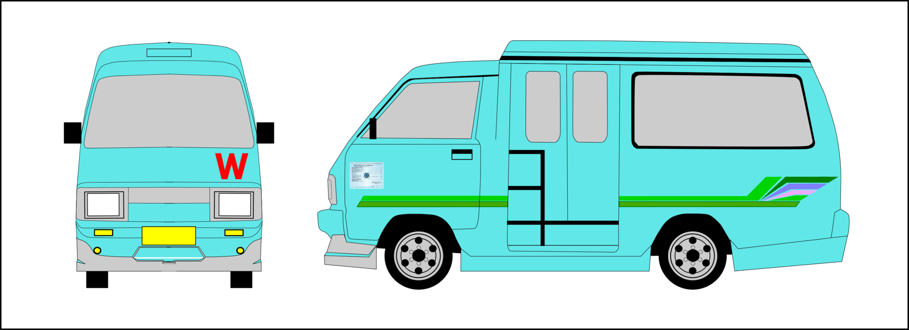
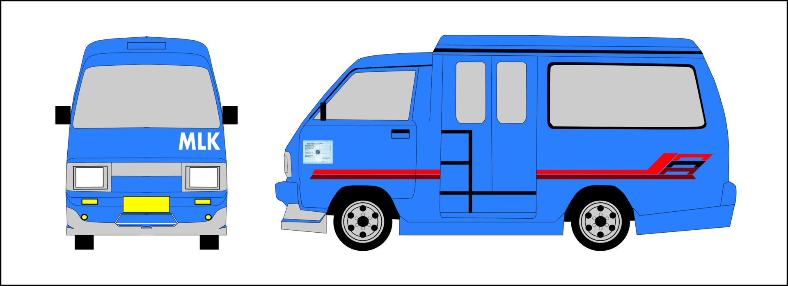

Transportasi
Senin, 14 September 2015
Kota surabaya yang berkembang menjadi kota dagang dan jasa mensyaratkan tersedianya kemudahan dan kecepatan akses, terutama di bidang sarana prasarana transportasi. Karenanya, selain menjadi kota transit, Surabaya juga menjadi tujuan bisnis.
Surabaya memiliki luas wilayah administratif yang cukup besar, lebih kurang 32,6 hektar. Sebagai kota dagang dan jasa menjadikan aktifitas warganya sangat membutuhkan akses yang cepat, terutama transportasi. Namun, kebutuhan warga di kota surabaya demikian telah terpenuhi oleh sarana prasarana kota yang memadai.
Untuk menjangkau seluruh sudut kota, warga kota tak perlu kuatir karena Kota Surabaya memiliki kelengkapan sarana dan prasarana transportasi yang memadai. Kota Surabaya memiliki infrastruktur transportasi darat, laut, dan udara yang mampu melayani perjalanan lokal, regional, maupun internasional.
Bandara Juanda melayani penerbangan domestik maupun internasional. Bandara Juanda telah menjadi bandara internasional yang menjadi nadi transportasi udara kebanggaan kota ini. Bandara Juanda menjadi lalu lintas berbagai maskapai yang beroperasi di Indonesia. Baik maskapai yang melakukan penerbangan dari dan ke kota-kota di seluruh Indonesia, maupun maskapai penerbangan ke luar negeri.
Tempat-tempat reservasi pun tersedia di berbagai tempat sehingga memudahkan warga kota yang mau melakukan perjalanan jalur udara.
Angkutan Kota
antara lain bus kota, angkutan kota (angkot), angguna (angkutan serba guna), bahkan becak. Angkutan kota dan angguna merupakan transportasi publik yang paling banyak dijumpai karena paling ekonomis dan rute yang dilalui cukup banyak (57 rute) serta bisa mencapai ke jalan-jalan yang kecil.
Bus kota (patas dan ekonomi) yang melayani transportasi publik kota surabaya memiliki 19 rute pada jalan-jalan utama dan di dukung oleh terminal-terminal yang representatif antara lain :
Terminal Purabaya
Meskipun lokasi Terminal Purabaya berada di Bungurasih Kabupaten Sidoarjo, namun
pengelolaannya oleh Dinas Perhubungan Kota Surabaya. Dalam skala kota Surabaya, letak terminal Purabaya berada di sisi Selatan kota Surabaya. Terminal Purabaya memiliki luas lahan 120.000 m2. melayani angkutan Antar Kota Antar Propinsi (AKAP), Angkutan Antar Kota Dalam Propinsi (AKDP), dan Angkutan Kota. Jaringan trayek angkutan kota yang dilayani Terminal Purabaya adalah bus kota.
Terminal Tambak Oso Wilangun
Lokasi terminal ini terletak di sebelah Barat Laut Surabaya, berada dekat dengan perbatasan Kabupaten Gresik. Terminal Tambak Oso Wilangun memiliki luas lahan 50.000 m2. Jaringan trayek angkutan kota yang dilayani Terminal Tambak Oso Wilangun adalah bus kota dan angkutan (lyn).
Terminal Joyoboyo
Lokasi terminal ini terletak di sebelah selatan dengan luas lahan 11.134 m2. Jaringan trayek angkutan kota yang dilayani Terminal Joyoboyo ini yakni bus kota, dan angkutan kota (lyn).
Terminal Bratang
Lokasi terminal ini terletak di sebelah timur dengan luas lahan 2.575 m2. Jaringan trayek angkutan kota yang dilayani Terminal Bratang ini yakni bus kota dan angkutan kota (lyn).
Terminal Angkutan Kota
Terminal angkutan kota yang dikelola oleh Pemerintah Kota antara lain yaitu :
-Terminal Menanggal
-Terminal Keputih
-Terminal Dukuh Kupang
-Terminal Benowo
-Terminal Petekan/Kalimas Barat
-Terminal Manukan
-Terminal Balongsari
-Terminal Kenjeran
-Terminal Kedung Cowek
-Shelter Bulak
-Sub Terminal Kasuari
-Pangkalan Angkutan Kota (Lyn)
Selain Terminal dan Sub Terminal, fasilitas transportasi kota yang klasifikasinya lebih kecil yaitu Pangkalan Angkutan Kota (lyn) yang pada umumnya dikelola oleh ”Paguyuban” angkutan kota. Lokasi pangkalan angkot ini biasanya merupakan simpul akhir trayek angkot dari terminal. Untuk pelayanan penumpang di sepanjang rute, tersedia fasilitas tempat pemberhentian berupa Halte atau Shelter, dan berupa Rambu (tanpa ada bangunan). Jumlah Halte atau Shelter sekitar 53 buah, sedangkan rambu sejumlah 29 buah.
RUTE BIS KOTA
| Kode | Rute |
| A |
Purabaya - Ngagel – Semut (A2) Purabaya/Bungurasih – Ahmad Yani – Stasiun Wonokromo – Ngagel – Raya Gubeng – Stasiun Gubeng – Kusuma Bangsa – D. Gembong – Kalianyar – Pengampon - Bunguran – Putar Kya Kya (Kembang Jepun-Kapasan) – Gembong – Pecindilan – Kembali dengan rute yang sama |
| D |
Purabaya – Bratang Berangkat : Purabaya/Bungurasih – Ahmad Yani – Jemursari – Prapen – (D. Panjang Jiwo) – Nginden – Bratang Kembali : Bratang – Bratang Jaya – Barata Jaya XIX – Barata Jaya XVII – Nginden - (D. Panjang Jiwo) – Prapen – Jemursari – Ahmad Yani – Purabaya/Bungurasih |
| E |
Purabaya – Joyoboyo (E2) Purabaya/Bungurasih – Ahmad Yani – Wonokromo – Joyoboyo – Kembali dengan rute yang sama |
| F |
Purabaya - Kupang - Raden Saleh – JMP Berangkat : Purabaya/Bungurasih – Ahmad Yani – Wonokromo – Diponegoro – (D. Kupang) – Pasar Kembang – Arjuno – Semarang – Stasiun Pasar Turi - Raden Saleh – Bubutan – Indrapura – Rajawali – Jembatan Merah Plasa (JMP) Kembali : Jembatan Merah Plasa (JMP) – Jembatan Merah – Veteran – Pahlawan – Gemblongan – Siola – Praban – Bubutan – Raden Saleh – Stasiun Pasar Turi – Semarang – Arjuno – Pasar Kembang - (D. Kupang) – Diponegoro – Wonokromo – Ahmad Yani – Purabaya/Bungurasih |
| P1 |
Purabaya - Darmo/TP/Siola - Indrapura – Perak Berangkat : Purabaya/Bungurasih – Ahmad Yani – Wonokromo – Darmo – Urip Sumoharjo – Basuki Rahmat – (D. Tunjungan / TP) – Embong Malang – Blauran – Bubutan – Indrapura – Rajawali – Perak Barat – Prapat Kurung – Kalimas Baru – Perak (Pelabuhan) Kembali : Perak (Pelabuhan) – Kalimas Baru – Prapat Kurung – Perak Timur – Rajawali – Jembatan Merah Plasa (JMP) - Jembatan Merah – Veteran – Pahlawan – Kramat Gantung – Siola – Tunjungan – Gubernur Suryo – Panglima Sudirman – Bambu Runcing – Panglima Sudirman – Urip Sumoharjo – Darmo – Wonokromo – Ahmad Yani – Purabaya/Bungurasih |
| P3 |
Sidoarjo - Dupak - Rajawali – JMP Berangkat : Terminal Sidoarjo – Pahlawan – (Gor Delta Sidoarjo) – Pahlawan – Masuk Tol Sidoarjo Keluar Tol Dupak – Pasar Loak - Dupak – Pasar Turi – Bubutan – Indrapura – Rajawali – Jembatan Merah Plasa (JMP) Kembali : Jembatan Merah Plasa (JMP) – Jembatan Merah – Veteran – Pahlawan – Tembaan – Pasar Turi – Dupak – Pasar Loak – Masuk Tol Dupak Keluar Tol Sidoarjo - Pahlawan – (Gor Delta Sidoarjo) – Pahlawan – Gajah Mada – Terminal Sidoarjo |
| P4 |
Purabaya - Dupak - Perak (Lewat Tol) Berangkat : Purabaya/Bungurasih – Masuk Tol Waru Keluar Tol Dupak - Pasar Loak – Dupak – Demak – Gresik Gadukan – Gresik - Perak Barat – Prapat Kurung – Kalimas Baru – Perak (Pelabuhan) Kembali : Perak (Pelabuhan) – Kalimas Baru – Prapat Kurung – Perak Timur – Gresik – Gresik Gadukan – Demak – Dupak – Pasar Loak – Masuk Tol Dupak Keluar Tol Waru – Purabaya/Bungurasih |
| P5 |
Purabaya - Dupak - JMP (Lewat Tol) Berangkat : Purabaya/Bungurasih – Masuk Tol Waru Keluar Tol Dupak - Pasar Loak – Dupak - Pasar Turi – Bubutan – Indrapura – Rajawali – Jembatan Merah Plasa (JMP) Kembali : Jembatan Merah Plasa (JMP) – Jembatan Merah – Veteran – Pahlawan – Tembaan – Pasar Turi – Dupak – Pasar Loak – Masuk Tol Dupak Keluar Tol Waru – Purabaya/Bungurasih |
| P6 |
Purabaya - Kupang - Demak - Tambak Oso Wilangun Purabaya/Bungurasih – Ahmad Yani – Wonokromo – Diponegoro – (D. Kupang) – Pasar Kembang – Arjuno – Tembok Dukuh – Demak – Dupak – Pasar Loak – Masuk Tol Dupak Keluar Tol Tandes – Margomulyo – Tambak Osowilangun – Kembali dengan rute yang sama |
| P8 |
Purabaya - Tambak Oso Wilangun (Lewat Tol) Purabaya/Bungurasih – Masuk Tol Waru Keluar Tol Tandes – Margomulyo – Tambak Osowilangun – Kembali dengan rute yang sama |
| CAD | Cadangan |
|
Purabaya - Aloha - Bandara Juanda Purabaya/Bungurasih – Raya Waru – Aloha - Raya Juanda – Pangkalan Bandara Juanda – Kembali dengan rute yang sama |
|
| PAC 1 |
Purabaya - Darmo/TP/Siola - Indrapura - Perak / Patas AC Berangkat : Purabaya/Bungurasih – Ahmad Yani – Wonokromo – Darmo – Urip Sumoharjo – Basuki Rahmat – (D. Tunjungan / TP) – Embong Malang – Blauran – Bubutan – Indrapura – Rajawali – Perak Barat – Prapat Kurung – Kalimas Baru – Perak (Pelabuhan) Kembali : Perak (Pelabuhan) – Kalimas Baru – Prapat Kurung – Perak Timur – Rajawali – Jembatan Merah Plasa (JMP) - Jembatan Merah – Veteran – Pahlawan – Kramat Gantung – Siola – Tunjungan – Gubernur Suryo – Panglima Sudirman – Bambu Runcing – Panglima Sudirman – Urip Sumoharjo – Darmo – Wonokromo – Ahmad Yani – Purabaya/Bungurasih |
| PAC 8 |
Purabaya - Tambak Oso Wilangun / Patas AC (Lewat Tol) Purabaya/Bungurasih – Masuk Tol Waru Keluar Tol Tandes – Margomulyo – Tambak Osowilangun – Kembali dengan rute yang sama |
RUTE MPU / MIKROLET / ANGKUTAN KOTA
| Kode / Lyn | Rute | Warna Angkot |
|
C (Blauran) |
Sedayu - Demak - Karang Menjangan (lewat Blauran) Berangkat : Pangkalan Sedayu – Demak – Dupak – Bubutan (Sisi Utara) – Pasar Turi – Semarang – Stasiun Pasar Turi – Semarang – Kranggan – (D. Blauran) – Praban – Siola – Genteng Kali – Ngemplak – Ondomohen – Walikota Mustajab (Balaikota) – Jaksa Agung (Jagung) Suprapto – Ambengan – Kusuma Bangsa – Ngaglik – Tambaksari – Residen Sudirman – Pacar Keling – Kalasan – Jolotundo – Tambang Boyo – Karang Menjangan Kembali : Karang Menjangan – Airlangga – Kedung Sroko – Pacar Keling – Residen Sudirman – Ambengan – Ngemplak – Genteng Kali – Praban – Bubutan – Pirngadi – Pawiyatan – Semarang – Dupak – Pasar Loak – Dupak – Demak – Purwodadi – Pangkalan Sedayu |
|
|
C (IndPura) |
Sedayu - Demak - Karang Menjangan (lewat Indrapura) Berangkat : Pangkalan Sedayu – Demak Pasar Loak – Demak – Gresik Gadukan – Gresik – Rajawali – JMP – Veteran – Stasiun Kota – Pasar Atom – Gembong – Gembong Tebasan – Kapasari - Ngaglik – Tambaksari – Residen Sudirman – Pacar Keling – Kalasan – Jolotundo – Tambang Boyo – Karang Menjangan Kembali : Karang Menjangan – Airlangga – Kedung Sroko – Pacar Keling – Residen Sudirman – Ambengan – Kusuma Bangsa – Kapasari – Gembong Tebasan – Pengampon – Stasiun Kota – Pahlawan – Tugu Pahlawan – Bubutan (Sisi Utara) – Indrapura – Gresik – Gresik Gadukan – Pangkalan Sedayu - Demak |
|
| D |
RSI - Joyoboyo - Kupang - Pasar Turi - Sidorame Pangkalan RSI – Wonokromo – Joyoboyo – Diponegoro – (D. Kupang) – Pasar Kembang – Arjuno – Semarang – Stasiun Pasar Turi – Tembaan (Kembali : Pasar Turi) – Bubutan (Sisi Utara) – Stasiun Kota – Dukuh – Pegirian – Nyamplungan – (D. Ampel) – Pangkalan Sidorame – Kembali dengan rute yang sama (Masuk Parkir DTC Lantai 2) |
|
| E |
Petojo(Karang Menjangan) – Balongsari Berangkat : Pangkalan Dharma Husada – Prof Moestopo – Karang Menjangan – Airlangga – Prof Moestopo – Gubeng Pojok – Pemuda – Panglima Sudirman (Bambu Runcing) – Basuki Rahmat – Embong Malang – Tidar – Pasar Tidar – Tembok Sayuran – Kalibutuh – Asem Raya – Asem Mulya – Tambak Mayor – Tanjungsari – Tandes – Balongsari Tama – Balongsari Kembali : Balongsari – Tandes – Tanjungsari – Tambak Mayor – Asem Mulya – Asem Raya – Kalibutuh – Tembok Sayuran – Tidar – Blauran – Praban – Siola – Genteng Kali – Ngemplak – Simpang Dukuh – Gubernur Suryo – Balai Pemuda – Yos Sudarso – Balai Kota – Prof Moestopo – Pangkalan Dharma Husada |
|
| E |
Petojo(Karang Menjangan) – Simorukun Berangkat : Pangkalan Dharma Husada – Prof Moestopo – Karang Menjangan – Airlangga – Prof Moestopo – Gubeng Pojok – Pemuda – Panglima Sudirman (Bambu Runcing) – Basuki Rahmat – Embong Malang – Tidar – Widodaren – Argopuro – Merapi – Petemon Kali – Petemon III – Simo Kwagean – Petemon IV – Simomulyo I – Pangkalan Simorukun Kembali : Pangkalan Simorukun – Simomulyo I – Petemon IV – Simo Kwagean – Petemon III – Petemon Kali – Merapi – Argopuro - Widodaren – Tidar – Blauran – Praban – Siola – Genteng Kali – Ngemplak – Simpang Dukuh – Gubernur Suryo – Balai Pemuda – Yos Sudarso – Balai Kota – Prof Moestopo – Pangkalan Dharma Husada |
|
| E |
Petojo(Karang Menjangan) – Sawahan Berangkat : Pangkalan Dharma Husada – Prof Moestopo – Karang Menjangan – Airlangga – Prof Moestopo – Gubeng Pojok – Pemuda – Panglima Sudirman (Bambu Runcing) – Basuki Rahmat – Embong Malang – Tidar – Pasar Tidar – Pangkalan Sawahan Kembali : Pangkalan Sawahan – Tidar – Blauran – Praban – Siola – Genteng Kali – Ngemplak – Simpang Dukuh – Gubernur Suryo – Balai Pemuda – Yos Sudarso – Balai Kota – Prof Moestopo – Pangkalan Dharma Husada |
|
| F |
Joyoboyo - Ngagel - Endrosono Joyoboyo – Wonokromo – Stasiun Wonokromo – Ngagel – Raya Gubeng – Stasiun Gubeng – Kusuma Bangsa - Kapasari – Simokerto – Sidotopo – Sidorame – Karang Tembok _ Pangkalan Endrosono - Kembali dengan rute yang sama |
|
| G |
Joyoboyo - Karang Menjangan Berangkat : Joyoboyo – Ciliwung – Adityawarman – Padmosusastro – Indragiri – Dr. Soetomo – Sriwijaya – Padjajaran – (D. Keputran) – Sulawesi – Raya Gubeng – Bangka – Biliton – Kertajaya – Menur – Karang Menjangan – Pangkalan Dharma Husada Kembali : Pangkalan Dharma Husada – Karang Menjangan – Kertajaya – Putar Manyar Kertoarjo – Kertajaya – Raya Gubeng _ Karimun Jawa – Urip Sumoharjo – Darmo – Dr. Soetomo – Indragiri – Adityawarman – Hayam Wuruk – Brawijaya - Joyoboyo |
|
| G |
Joyoboyo - Karang Pilang Berangkat : Joyoboyo – Gunungsari – Mastrip (Mastrip Kedurus – Mastrip Kemlaten) – Pasar Karang Pilang - Ngelom – Pasar Sepanjang Kembali : Pasar Sepanjang - Stasiun Sepanjang – Bebekan - Karang Pilang – Mastrip – Gunungsari - Joyoboyo |
|
| G |
Joyoboyo – Lakarsantri Joyoboyo – Gunungsari – Raya Menganti (Menganti Wiyung – Menganti Lidah Wetan – Menganti Lidah Kulon) – Lakarsantri – Pangkalan Lakarsantri – Kembali dengan rute yang sama |
|
| G |
Joyoboyo - Wisma Lidah Kulon Joyoboyo – Gunungsari – Raya Menganti (Menganti Wiyung – Menganti Lidah Wetan – Menganti Lidah Kulon) – Wisma Lidah Kulon – Bangkingan – Terminal Lidah Kulon – Kembali dengan rute yang sama |
|
| H1 |
Pasar Wonokromo - Aloha - Sepanjang Berangkat : Parkir DTC Lantai 2 – Wonokromo – Ahmad Yani – Waru – Putar Aloha – Waru – Letjen Sutoyo – Raya Taman – Ketegan – Bebekan – Wonocolo – Ngelom – Pasar Sepanjang Kembali : Pasar Sepanjang – Stasiun Sepanjang – Bebekan – Ketegan – Raya Taman – Letjen Sutoyo – Masuk Terminal Bungurasih – Waru – Ahmad Yani - Stasiun Wonokromo – Parkir DTC |
 |
| H2 |
RSI - Pagesangan - Sepanjang Berangkat : Pangkalan Wonokromo – RSI – Jetis Kulon I – Pulo Wonokromo – Karah – Jambangan – Kebonsari – Pagesangan – Sepanjang Tani - Bebekan – Wonocolo – Ngelom – Pasar Sepanjang Kembali : Pasar Sepanjang – Stasiun Sepanjang – Bebekan – Kembali dengan rute yang sama dari Sepanjang Tani (Masuk Parkir DTC Lantai 2) |
 |
| H2P |
Pasar Wonokromo - Pagesangan - Terminal Menanggal – Bungurasih Berangkat : Pangkalan Wonokromo – RSI – Jetis Kulon I – Pulo Wonokromo – Kebonagung – Jambangan Kebonagung – Kebonsari Tengah – Pasar Pagesangan - Pagesangan II – Masjid Al-Akbar – Wisma Pagesangan I – Cipta Menanggal – Terminal Menanggal – Dukuh Menanggal – Bungurasih Utara – Bungurasih Tengah – Bungurasih Timur – Pangkalan Ramayana Bungurasih Kembali : Pangkalan Ramayana Bungurasih – Letjen Sutoyo – Waru – Menanggal – Kembali dengan rute yang sama dari Terminal Menanggal (masuk Parkir DTC Lantai 2) |
|
| H4J |
Joyoboyo - Rungkut Industri - Sedati Joyoboyo – Wonokromo – (Masuk Parkir DTC Lantai 2) - Ahmad Yani – Jemursari – Jemur Andayani – Raya Rungkut Industri – Rungkut Menanggal – Wadung Asri – Pasar Gedongan – Tropodo – Sedati Gede – Sedati – Kembali dengan rute yang sama |
|
| H4W |
Pasar Wonokromo - Rungkut Industri - Sedati Parkir DTC Lantai 2 – Wonokromo – Ahmad Yani – Jemursari – Jemur Andayani – Raya Rungkut Industri – Rungkut Menanggal – Wadung Asri – Pasar Gedongan – Tropodo – Sedati Gede – Sedati – Kembali dengan rute yang sama |
|
| I |
Dukuh Kupang - Kembang Kuning - Manukan – Benowo Dukuh Kupang – Dukuh Kupang XX – Dukuh Kupang Timur X – Pakis Sidokumpul – Kembang Kuning Makam – Kembang Kuning – Pasar Burung Kupang – Banyu Urip – Sukomanunggal – Tandes – (Berangkat : Sikatan – Manukan Krajan – Kyai Amir) – Manukan – Banjarsugihan – Kandangan - Moro Seneng - Sememi – Pakal – Benowo – Kembali dengan rute yang sama |
|
| J |
Joyoboyo - Kupang - Banyu Urip – Kalianak Berangkat : Joyoboyo – Diponegoro – (D. Kupang) – Banyu Urip – Simo Kwagean – Petemon Barat – Petemon Kali – Patua - Tidar – Pasar Tidar – Tembok Sayuran – Kalibutuh – Asemrowo – Tambak Asri – Kalianak - Pangkalan Kalianak Kembali : Pangkalan Kalianak – Kalianak – Tambak Asri – Asemrowo – Kalibutuh – Tembok Sayuran – Tidar – Patua - Petemon Kali – Petemon Barat - Simo Kwagean – Banyu Urip – (D. Kupang) – Diponegoro – Ciliwung – Adityawarman - Hayam Wuruk – Brawijaya - Joyoboyo |
|
| K |
Ujung Baru - Perak – JMP Perak (Pelabuhan) – Kalimas Baru – Prapat Kurung – Perak Timur - Rajawali – JMP – Jembatan Merah – Veteran – Pahlawan – Tugu Pahlawan – Bubutan (Sisi Utara) – Indrapura – Perak Barat – Prapat Kurung – Kalimas Baru – Perak (Pelabuhan) |
|
| M |
Joyoboyo - Dinoyo - Undaan - JMP/Kalimas Barat Berangkat : Joyoboyo – Marmoyo – Darmokali – Dinoyo – (D. Keputran) – Sulawesi – Sumatera – Karimun Jawa – Kayun (Kayoon) – Pasar Kayun – Pemuda – Yos Sudarso – Balai Kota - Walikota Mustajab (Balaikota) – Ondomohen – Genteng Kali – Undaan Kulon – Pengampon – Bunguran – Pasar Atom - Stasiun Kota – Pahlawan – Tugu Pahlawan – Indrapura – Krembangan Barat – Krembangan Makam – Krembangan Besar – Rajawali – JMP – Kasuari - Kalimas Barat – Petekan Kembali : Petekan – JMP – Jembatan Merah – Veteran – Stasiun Kota – Pasar Atom - Gembong - Pecindilan – Undaan Wetan – Ambengan - Jaksa Agung (Jagung) Suprapto – Balikota – Gubeng Pojok – Pemuda – Kayun (Kayoon) – Pasar Kayun – Pasar Keputran – Urip Sumoharjo – Pandegiling – Dinoyo – Bung Tomo – Upa Jiwa – Ratna – Jembatan BAT - Darmokali – Marmoyo – Joyoboyo (Masuk Parkir DTC Lantai 2) |
|
| N |
JMP/Kalimas Barat - Menur – Bratang Berangkat : Petekan – JMP – Jembatan Merah – Veteran – Pahlawan – Kramat Gantung – Gemblongan – Siola – Genteng Kali – Ngemplak – Ondomohen – Walikota Mustajab (Balaikota) – Gubeng Pojok – Raya Gubeng – Biliton – Kertajaya – Putar Manyar Kertoarjo – Kertajaya – Pucang Anom Timur – Pucang Anom – Pucang Jajar Tengah – Menur – Manyar – Bratang Kembali : Bratang – Bratang Jaya – Bratang Binangun – Manyar – Menur – Kertajaya – Sulawesi – Raya Gubeng – Pemuda - Yos Sudarso – Walikota Mustajab (Balaikota) – Ondomohen – Genteng Kali – Siola – Praban - Bubutan - Indrapura – Krembangan Barat – Krembangan Makam – Krembangan Besar – Rajawali – JMP – Kasuari - Kalimas Barat – Petekan |
|
|
O (Pogot) |
Tambak Wedi - Petojo (Karang Menjangan) – Keputih Berangkat : Pangkalan Tambak Wedi - Kedung Cowek – Kenjeran – Tambakrejo (RSUD Dr. Soewandhie) – Kapas Krampung – Karang Asem – Bronggalan – Tambang Boyo – Prof Moestopo – Dharma Husada – Dharma Husada Indah – Kertajaya Indah Tengah – Manyar Kertoadi – Galaxy – Manyar Kertoadi – Gebang Putih – Arief Rahman Hakim (Surabaya Convention Hall) - Keputih Kembali : Keputih - Arief Rahman Hakim (Surabaya Convention Hall) - Gebang Putih – Manyar Kertoadi (Asrama Haji) - Kertajaya Indah – Dharma Husada Indah – Dharma Husada – Karang Menjangan – Airlangga - Kedung Sroko – Kalasan – Jolotundo – Bronggalan – Karang Asem – Putro Agung – Kedung Cowek – Pangkalan Tambak Wedi |
|
| O |
JMP/Kalimas Barat - Petojo (Karang Menjangan) – Keputih Berangkat : Petekan – JMP – Jembatan Merah – Veteran – Pahlawan – Pasar Besar – Peneleh – Makam Peneleh – Undaan Kulon – Kalianyar - Ngaglik– Kapas Krampung – Karang Asem – Bronggalan – Tambang Boyo – Prof Moestopo – Dharma Husada – Dharma Husada Indah – Kertajaya Indah Tengah – Manyar Kertoadi – Galaxy – Manyar Kertoadi – Gebang Putih – Arief Rahman Hakim (Surabaya Convention Hall) - Keputih Kembali : Keputih - Arief Rahman Hakim (Surabaya Convention Hall) - Gebang Putih – Manyar Kertoadi (Asrama Haji) - Kertajaya Indah – Dharma Husada Indah – Dharma Husada – Karang Menjangan – Airlangga - Kedung Sroko – Kalasan – Jolotundo – Bronggalan – Karang Asem – Kapas Krampung – Tambaksari – Ambengan – Kusuma Bangsa – Kalianyar - Jagalan – Pasar Besar – Tembaan - Bubutan - Indrapura – Krembangan Barat – Krembangan Makam – Krembangan Besar – Rajawali – JMP – Kasuari - Kalimas Barat – Petekan |
|
| WK |
Tambak Oso Wilangun (Depan SPBU) - Petojo (Karang Menjangan) – Keputih Berangkat : Tambak Oso Wilangun – Margomulyo – Masuk Tol Tandes Keluar Tol Dupak – Dupak (Depan Pasar Turi) - Tembaan – Pasar Besar – Peneleh – Makam Peneleh – Undaan Kulon – Kalianyar - Ngaglik– Kapas Krampung – Ploso Bogen – Jagiran - Jolotundo – Bronggalan – Tambang Boyo – Prof Moestopo – Dharma Husada – Dharma Husada Indah – Kertajaya Indah Tengah – Manyar Kertoadi – Galaxy – Manyar Kertoadi – Gebang Putih – Arief Rahman Hakim (Surabaya Convention Hall) - Keputih Kembali : Keputih - Arief Rahman Hakim (Surabaya Convention Hall) - Gebang Putih – Manyar Kertoadi (Asrama Haji) - Kertajaya Indah – Dharma Husada Indah – Dharma Husada – Karang Menjangan – Airlangga - Kedung Sroko – Kalasan – Jagiran – Ploso Bogen – Kapas Krampung – Tambaksari – Ambengan – Kusuma Bangsa – Kalianyar - Jagalan – Pasar Besar – Tembaan – Dupak – Pasar Loak – Masuk Tol Dupak Keluar Tol Tandes – Margomulyo – Tambak Oso Wilangun |
|
| P |
Joyoboyo - Gebang Putih – Kenjeran Berangkat : Joyoboyo – Jagir Wonokromo – Ngagel – Bung Tomo – Ngagel Timur – Pucang Sewu – Pasar Pucang – Pucang Anom – Pucang Jajar Tengah – Manyar Sabrangan – Mleto – Manyar Kertoadi – Gebang Lor – Raya ITS – Institut Sepuluh November (ITS) – Mulyosari – Tempurejo – Babatan Pantai VII – Babatan Pantai – Kenjeran – Wiratno – Kenjeran (Terminal) Kembali : Kenjeran (Terminal) – Wiratno – Babatan Pantai – Babatan Pantai VII – Tempurejo – Mulyosari – Raya ITS – Gebang Lor – Manyar Kertoadi (Asrama Haji) – Mleto – Manyar Sabrangan – Pucang Jajar Tengah – Pucang Anom – Pasar Pucang – Pucang Sewu – Ngagel Timur – Ngagel Rejo Utara – Ngagel Rejo Kidul – Ngagel – Stasiun Wonokromo – RSI – Wonokromo - Joyoboyo |
|
| P |
Joyoboyo - Petojo (Karang Menjangan) Berangkat : Joyoboyo – Jagir Wonokromo – Ngagel – Bung Tomo – Ngagel Jaya Selatan – Pucang Anom Timur – Kertajaya (Putar Balik) – Dharmawangsa – Prof Moestopo – Gerbong – Tapak Siring – Kidal – Pangkalan Petojo Kembali : Pangkalan Petojo – Tambang Boyo – (RSUD Dr. Soetomo) - Dharmawangsa – Kertajaya (Putar Balik) – Pucang Anom Timur – Ngagel Jaya Selatan - Ngagel Rejo Utara – Ngagel Rejo Kidul – Ngagel – Stasiun Wonokromo – RSI – Wonokromo - Joyoboyo |
|
|
P (Kenjeran) |
Joyoboyo - Petojo (Karang Menjangan) - Kalijudan – Kenjeran Berangkat : Joyoboyo – Jagir Wonokromo – Ngagel – Bung Tomo – Ngagel Jaya Selatan – Pucang Anom Timur – Kertajaya (Putar Balik) – Dharmawangsa – Prof Moestopo – Gerbong – Residen Sudirman – Pacar Keling – Sawentar – Jagiran – Ploso Bogen – Kapas Krampung – Putro Agung – Karang Empat IV – Lebak Arum - Kenjeran – Wiratno – Kenjeran (Terminal) Kembali : Kenjeran (Terminal) – Wiratno – Kenjeran – Kalijudan Madya – Karang Empat IV – Putro Agung – Ploso Bogen – Jagiran – Sawentar – Tapak Siring – Kidal – Tambang Boyo – Karang Menjangan – Airlangga - Dharmawangsa – Kertajaya (Putar Balik) – Pucang Anom Timur – Ngagel Jaya Selatan - Ngagel Rejo Utara – Ngagel Rejo Kidul – Ngagel – Stasiun Wonokromo – RSI – Wonokromo - Joyoboyo |
|
|
P (Ketintang) |
Petojo (Karang Menjangan) – Ketintang Berangkat : Petojo - Tambang Boyo – Karang Menjangan – Airlangga - Dharmawangsa – Kertajaya (Putar Balik) – Pucang Anom Timur – Ngagel Jaya Selatan - Ngagel Rejo Utara – Ngagel Rejo Kidul – Ngagel – Stasiun Wonokromo – Ahmad Yani – Ketintang – Ketintang Madya – Ketintang Madya VII – Pangkalan Ketintang Kembali : Pangkalan Ketintang – Ketintang Madya VII – Ketintang Madya – RSI – Stasiun Wonokromo – (Masuk Parkir DTC Lantai 2) - Ngagel – Bung Tomo – Ngagel Jaya Selatan – Pucang Anom Timur – Kertajaya (Putar Balik) – Dharmawangsa – Prof Moestopo – Gerbong – Tapak Siring – Kidal – Pangkalan Petojo |
|
| Q |
JMP/Kalimas Barat - Pasar Turi - Kupang - Bratang Berangkat : Petekan – JMP – Jembatan Merah – Veteran – Pahlawan – Tugu Pahlawan – Pasar Turi – Semarang – Tidar – Kedungdoro – Pasar Kembang – (D. Kupang) – Diponegoro – Dr. Soetomo – Polisi Istimewa - Dinoyo – Bung Tomo – Ngagel Jaya Selatan – Manyar – Bratang Kembali : Bratang – Bratang Jaya – Bratang Binangun – Ngagel Jaya Selatan – Upa Jiwa - Ratna – Ngagel – Dinoyo – Polisi Istimewa - Dr. Soetomo - Diponegoro – (D. Kupang) – Pasar Kembang – Kedungdoro – Tidar – Semarang – Tembaan – Bubutan (Sisi Utara) - Indrapura – Krembangan Barat – Krembangan Makam – Krembangan Besar – Rajawali – JMP – Kasuari - Kalimas Barat – Petekan |
|
| R |
JMP/Kalimas Barat - Kapasan – Kenjeran Berangkat : Petekan – JMP – Jembatan Merah – Veteran – Stasiun Kota – Pasar Atom – Kapasan – Pasar Kapasan – Kenjeran – Wiratno – Kenjeran (Terminal) Kembali : Kenjeran (Terminal) – Sukolilo Lor – Sukolilo Larangan – Kenjeran – Putro Agung – Kapas Krampung – Tambakrejo (RSUD Dr. Soewandhie) – Kenjeran - Kapasan – Gembong – Waspada – Karet – Jembatan Merah – Veteran – Kebonrojo - Indrapura – Krembangan Barat – Krembangan Makam – Krembangan Besar – Rajawali – JMP – Kasuari - Kalimas Barat – Petekan |
|
| R2 |
JMP/Kalimas Barat - Suramadu – Kenjeran Berangkat : Petekan – JMP – Kembang Jepun – Kapasan – Kampung Seng – Bolodewo – Sidorame – Karang Tembok – Wonokusumo – Kedungmangu – Kedinding Lor – Suramadu – Nambangan – Cumpat – Sentra Bulak - Pantai Kenjeran – Kenjeran (Terminal) Kembali : dengan rute yang sama sampai Kapasan – Gembong – Waspada – Karet – Jembatan Merah – Veteran – Kebonrojo - Indrapura – Krembangan Barat – Krembangan Makam – Krembangan Besar – Rajawali – JMP – Kasuari - Kalimas Barat – Petekan |
|
| S |
Joyoboyo - Bratang - Kenjeran PP Joyoboyo – Wonokromo – (Masuk Parkir DTC Lantai 2) – Stasiun Wonokromo – Ngagel – Ngagel Rejo Kidul – Bratang Gede – Bratang Jaya - Bratang (Masuk Lewat : Barata Jaya XIX – Barata Jaya XVII , Keluar : Bratang Jaya - Bratang Binangun) – Manyar – Menur Pumpungan – Arief Rahman Hakim (Surabaya Convention Hall) – Keputih – KH. Ahmad Dahlan - Kejawan Gebang – Kejawan Putih Tambak – Mulyosari – Tempurejo – Kenjeran – Wiratno – Kenjeran (Terminal) – Kembali dengan rute yang sama |
|
| T2 |
Joyoboyo - Karang Menjangan – Mulyosari Berangkat : Joyoboyo – Marmoyo – Darmokali – Jembatan BAT – Ngagel – Raya Gubeng – Bali – Biliton – Nias – Gubeng Masjid – Gerbong – Tapak Siring – Prof. Moestopo – Kedung Sroko – Pacar Keling – Kalasan – Jolotundo – Tambang Boyo – Kedung Tarukan – Kalikepiting – Kaliwaron – Mulyorejo – Sutorejo – Kalisari – Mulyosari – Pangkalan Wisma Permai Kembali : Pangkalan Wisma Permai – Mulyosari – Kalisari – Sutorejo – Mulyorejo – Kaliwaron – Kalikepiting – Kedung Tarukan – Tambang Boyo – Karang Menjangan – Airlangga – Prof. Moestopo – Gubeng Masjid – Nias – Jawa – Biliton – Sulawesi – Ngagel – Bung Tomo – Upa Jiwa – Ratna – Jembatan BAT – Darmokali – Bengawan – Serayu - Kapuas – Bengawan – Diponegoro – Ciliwung – Adityawarman - Hayam Wuruk – Brawijaya - Joyoboyo |
|
| T2 |
Joyoboyo - Karang Menjangan - Galaxy (Kampus Unair C) Berangkat : Joyoboyo – Marmoyo – Darmokali – Jembatan BAT – Ngagel – Raya Gubeng – Bali – Biliton – Nias – Gubeng Masjid – Gerbong – Tapak Siring – Prof. Moestopo – Kedung Sroko – Pacar Keling – Kalasan – Jolotundo – Tambang Boyo – Kedung Tarukan – Kalikepiting – Kaliwaron – Mulyorejo – Kampus C Unair ( Univ. Airlangga ) – Wisma Permai Barat – Wisma Permai II – Pangkalan Wisma Permai Kembali : Pangkalan Wisma Permai – Wisma Permai II – Wisma Permai Tengah II – Dharma Husada Permai XI – Dharma Husada Permai (MERR) – Kampus C Unair ( Univ. Airlangga ) – Mulyorejo – Kaliwaron – Kalikepiting – Kedung Tarukan – Tambang Boyo – Karang Menjangan – Airlangga – Prof Moestopo – Gubeng Masjid – Nias – Jawa – Biliton – Sulawesi – Ngagel – Bung Tomo – Upa Jiwa – Ratna – Jembatan BAT – Darmokali – Bengawan – Serayu - Kapuas – Bengawan – Diponegoro – Ciliwung – Adityawarman - Hayam Wuruk – Brawijaya - Joyoboyo |
|
| T2 |
Joyoboyo - Karang Menjangan – Kenjeran Berangkat : Joyoboyo – Marmoyo – Darmokali – Jembatan BAT – Ngagel – Raya Gubeng – Bali – Biliton – Nias – Gubeng Masjid – Gerbong – Tapak Siring – Prof Moestopo – Kedung Sroko – Pacar Keling – Kalasan – Jolotundo – Tambang Boyo – Kedung Tarukan – Kalikepiting – Kaliwaron – Mulyorejo – Sutorejo – Kalisari – Tempurejo – Kenjeran – Wiratno – Kenjeran (Terminal) Kembali : Kenjeran (Terminal) – Wiratno – Kenjeran - Tempurejo – Kalisari – Sutorejo – Mulyorejo – Kaliwaron – Kalikepiting – Kedung Tarukan – Tambang Boyo – Karang Menjangan – Airlangga – Prof Moestopo – Gubeng Masjid – Nias – Jawa – Biliton – Sulawesi – Ngagel – Bung Tomo – Upa Jiwa – Ratna – Jembatan BAT – Darmokali – Bengawan – Serayu - Kapuas – Bengawan – Diponegoro – Ciliwung – Adityawarman - Hayam Wuruk – Brawijaya - Joyoboyo |
|
| U |
Joyoboyo - Wonokromo - Rungkut Joyoboyo – Wonokromo – Jagir Wonokromo – Panjang Jiwo – Kalirungkut – Rungkut Menanggal – Pangkalan Rungkut Menanggal – Kembali dengan rute yang sama |
|
| V |
Joyoboyo - Kapas Krampung - Tambakrejo Berangkat : Joyoboyo – Darmo – Urip Sumoharjo – Basuki Rahmat – Gubernur Suryo – Balai Pemuda – Yos Sudarso – Balaikota – Wijaya Kusuma – Ambengan – Kusuma Bangsa – Ngaglik – Kapas Krampung – Tambak Segaran Wetan – Pangkalan Tambak Rejo Kembali : Pangkalan Tambak Rejo – Tambak Rejo – Tambak Segaran – Rangkah Besar – Kapas Krampung – Tambaksari – Ambengan – Wijaya Kusuma – Gubeng Pojok – Pemuda – Panglima Sudirman (Bambu Runcing) – Urip Sumoharjo – Darmo – Wonokromo – (Masuk DTC Lantai 2) - Joyoboyo |
 |
| W |
Dukuh Kupang - Kapas Krampung Berangkat : Dukuh Kupang – Dukuh Kupang XXV – Raya Dukuh Kupang – Jarak – Kupang Gunung – Girilaya – (D. Kupang) – Pasar Kembang – Kedungdoro – Kedungsari – Tegalsari – Pregolan – Basuki Rahmat – Gubernur Suryo – Balai Pemuda – Balaikota - Jaksa Agung (Jagung) Suprapto – Seruni – Kusuma Bangsa - Ngaglik – Kapas Krampung – Pangkalan Kapas Krampung Kembali : Pangkalan Kapas Krampung – Tambak Segaran – Rangkah Besar - Kapas Krampung – Tambaksari – Ambengan – Ngemplak – Simpang Dukuh – Taman Apsari – Embong Wungu – Panglima Sudirman (Bambu Runcing) – Basuki Rahmat – Tegalsari – Kedungsari – Kedungdoro – Pasar Kembang – (D. Kupang) – Diponegoro (Putar Pasar Burung Kupang) – Girilaya – Kupang Gunung – Jarak – Raya Dukuh Kupang – Dukuh Kupang XXV – Dukuh Kupang |
 |
| W |
Dukuh Kupang - Karang Menjangan Berangkat : Dukuh Kupang – Dukuh Kupang XXV – Raya Dukuh Kupang – Jarak – Kupang Gunung – Girilaya – (D. Kupang) – Pandegiling – Urip Sumoharjo – Embong Gayam – Panglima Sudirman – Sonokembang – Karimun Jawa – Raya Gubeng – Pemuda – Plaza Surabaya – Prof Moestopo – Dharma Husada – Pangkalan Dharma Husada Kembali : Pangkalan Dharma Husada – Dharma Husada - Karang Menjangan – Airlangga – Prof Moestopo – Gubeng Masjid – Nias – Kalimantan – Biliton – Sulawesi – Raya Gubeng – Karimun Jawa – Sonokembang – Urip Sumoharjo – Kartini – Sawunggaling – Cokroaminoto – Darmo – Pandegiling – (D. Kupang) – Diponegoro (Putar Pasar Burung Kupang) – Girilaya – Kupang Gunung – Jarak – Raya Dukuh Kupang – Dukuh Kupang XXV – Dukuh Kupang |
|
| Y |
Joyoboyo - Kupang - Banyu Urip – Demak Berangkat : Joyoboyo – Diponegoro – (D. Kupang) – Banyu Urip – Simo Kwagean – Petemon Barat – Petemon Kali – Patua – Merapi – Arjuno – Tembok Dukuh – Demak - Purwodadi – Pangkalan Sedayu Kembali : Pangkalan Sedayu – Demak – Tembok Dukuh – Patua - Petemon Kali – Petemon Barat - Simo Kwagean – Banyu Urip – (D. Kupang) – Diponegoro – Ciliwung – Adityawarman - Hayam Wuruk – Brawijaya - Joyoboyo |
|
| X |
Joyoboyo – Pabrik Paku – Gedongan – Tambak Sawah Joyoboyo – Wonokromo – (Masuk Parkir DTC Lantai 2) - Ahmad Yani – Waru – Pabrik Paku – Brigjen Katamso – Ngeni – Kol. Sugiono – Pasar Gedongan – Wadung Asri – Tambak Sawah (Industri) – Kembali dengan rute yang sama |
|
| Z |
JMP/Kalimas Barat - Benowo Berangkat : Petekan – JMP – Jembatan Merah – Veteran – Kebonrojo – Indrapura – Gresik – Gresik Gadukan – Kalianak – Greges – Margomulyo - Tandes – Manukan – Banjarsugihan – Kandangan - Moro Seneng - Sememi – Pakal – Benowo – Kembali dengan rute yang sama sampai jalan Gresik – Rajawali - JMP – Kasuari - Kalimas Barat – Petekan |
|
| PERAK |
Ujung Baru - Perak - Tanjungsari - Sememi (BDH) – Benowo Berangkat : Perak (Pelabuhan) – Kalimas Baru – Prapat Kurung – Laksda M. Nazir (Kodikal) – Perak Timur - Gresik – Gresik Gadukan – Demak – Dupak – Pasar Loak – Dupak Rukun – Tambak Mayor - Tanjungsari - Tandes – Manukan – Banjarsugihan – Kandangan - Moro Seneng – Sememi – Kendung – Pangkalan RSUD BDH (Bhakti Darma Husada) - Benowo Kembali : Benowo - Pangkalan RSUD BDH (Bhakti Darma Husada) – Kendung – Sememi – Moro Seneng – Kandangan – Banjarsugihan – Manukan – Tandes – Tanjungsari – Tambak Mayor – Dupak Rukun – Dupak - Demak – Tanjung Sadari – Laksda M. Nazir (Kodikal) – Prapat Kurung – Perak Barat – Perak (Pelabuhan) |
|
| PERAK |
Ujung Baru - Perak - Kalianak - Sememi (BDH) – Benowo Berangkat : Perak (Pelabuhan) – Kalimas Baru – Prapat Kurung – Laksda M. Nazir (Kodikal) – Perak Timur - Gresik – Gresik Gadukan – Kalianak – Greges – Margomulyo - Tandes – Manukan – Banjarsugihan – Kandangan - Moro Seneng – Sememi – Kendung – Pangkalan RSUD BDH (Bhakti Darma Husada) - Benowo Kembali : Benowo - Pangkalan RSUD BDH (Bhakti Darma Husada) – Kendung – Sememi – Moro Seneng – Kandangan – Banjarsugihan – Manukan – Tandes – Margomulyo – Greges – Kalianak – Gresik Gadukan – Tanjung Sadari – Laksda M. Nazir (Kodikal) – Prapat Kurung – Perak Barat – Perak (Pelabuhan) |
|
| TV |
Joyoboyo - Dukuh Kupang – Ngesong Berangkat : Joyoboyo – Diponegoro – Ciliwung – Adityawarman – Mayjen Sungkono – TVRI – Raya Dukuh Kupang – Dukuh Kupang XXV – Dukuh Kupang – Dukuh Kupang Barat XVI – Dukuh Kupang Barat – Jembatan Ngesong – Kupang Jaya – Pangkalan Ngesong Kembali : Pangkalan Ngesong – Kupang Jaya – Jembatan Ngesong – Dukuh Kupang Barat – Dukuh Kupang Barat XVI – Dukuh Kupang XXV – Raya Dukuh Kupang – TVRI – Mayjen Sungkono – Adityawarman - Hayam Wuruk – Brawijaya - Joyoboyo |
|
| TV |
Joyoboyo - Ngesong – Balongsari Berangkat : Joyoboyo – Diponegoro – Ciliwung – Adityawarman – Mayjen Sungkono – HR. Mohammad (HR. Moh.) – Kupang Indah – Kupang Jaya – Patimura – Segi Delapan – Darmo Harapan I – Darmo Harapan IV – Darmo Harapan – Darmo Indah Timur – Darmo Indah Barat – Darmo Indah Sari – Balongsari Tama - Balongsari Kembali : Balongsari – Balongsari Tama – Darmo Indah Sari – Darmo Indah Barat – Darmo Indah Timur – Darmo Harapan – Darmo Harapan IV – Darmo Harapan I – Patimura – Kupang Jaya - Kupang Indah – Mayjen Sungkono – Adityawarman - Hayam Wuruk – Brawijaya - Joyoboyo |
|
| TV |
Joyoboyo - Tubanan – Manukan Berangkat : Joyoboyo – Diponegoro – Ciliwung – Adityawarman – Mayjen Sungkono – HR. Mohammad (HR. Moh.) – Simpang Darmo Permai Utara – Tubanan Lama – Gadel Timur – Balongsari Praja – Bumi Indah – Lempung Indah – Manukan Tama – Manukan Lor – Manukan Tengah – Manukan Kembali : Manukan – Manukan Tama – Manukan Tengah – Manukan Lor – Manukan Tama – Lempung Indah – Bumi Indah – Balongsari Praja – Gadel Timur – Tubanan Lama – Simpang Darmo Permai Utara – Mayjen Sungkono – Adityawarman - Hayam Wuruk – Brawijaya - Joyoboyo |
|
| TV |
Joyoboyo - Darmo Boulevard – Lontar Berangkat : Joyoboyo – Diponegoro – Ciliwung – Adityawarman – Mayjen Sungkono – HR. Mohammad (HR. Moh.) – Bukit Darmo Boulevard – Lontar (Putar PTC) – Lontar – Pangkalan Lontar Kembali : Pangkalan Lontar – Lontar (Putar PTC) – Lontar – Bukit Darmo Boulevard - Mayjen Sungkono – Adityawarman - Hayam Wuruk – Brawijaya - Joyoboyo |
|
|
DA (Atom/Simpang) |
Darmo Permai - Pasar Atom Berangkat : Pangkalan Darmo Permai Utara - Darmo Permai Utara – Mayjen Sungkono – Bintang Diponggo – Pakis Tirtosari – Pakis – Kanwa – Prapanca – Khairil Anwar – WR. Supratman – Imam Bonjol – Kartini – Sawunggaling – Cokroaminoto – Darmo – Urip Sumoharjo – Basuki Rahmat – Embong Malang – Blauran – Bubutan – Kebonrojo – Stasiun Kota – Pangkalan Pasar Atom Kembali : Pangkalan Pasar Atom – Waspada – Siaga – Stasiun Kota – Semut Madya – Semut Kali – Peneleh – Gemblongan – Tunjungan – Gubernur Suryo – Panglima Sudirman – (Bambu Runcing) – Urip Sumoharjo – Kartini – Teuku Umar – WR. Supratman – Diponegoro (Putar Balik Bogowonto) – Khairil Anwar – Prapanca – Kanwa – Pakis – Pakis Tirtosari – Bintang Diponggo - Mayjen Sungkono – HR. Mohammad (HR. Moh.) – Simpang Darmo Permai Utara |
|
|
DA (JMP/PTC) |
Citra Land - JMP – Krembangan Berangkat : Pangkalan Citra Land – Taman Puspa Raya – Telaga Utama Road – Balerina Raya Road – Gwalk – Niaga Gapura – Lontar (Putar PTC) – Lontar – Bukit Darmo Boulevard – Mayjen Sungkono – Bintang Diponggo – Pakis Tirtosari – Pakis – Kanwa – Prapanca – Khairil Anwar – WR. Supratman – Imam Bonjol – Kartini – Sawunggaling – Cokroaminoto – Darmo – Urip Sumoharjo – Basuki Rahmat – Embong Malang – Blauran – Bubutan – Kebonrojo – Stasiun Kota – Karet – JMP - Jembatan Merah – Niaga Samping – Kepanjen – Sikatan – Krembangan Barat – Pangkalan Krembangan Kembali : Pangkalan Krembangan – Merak – Cendrawasih – Veteran – Pahlawan - Johar – Semut Kali – Peneleh – Gemblongan – Tunjungan – Gubernur Suryo – Panglima Sudirman – (Bambu Runcing) – Urip Sumoharjo – Kartini – Teuku Umar – WR. Supratman – Diponegoro (Putar Balik Bogowonto) – Khairil Anwar – Prapanca – Kanwa – Pakis – Pakis Tirtosari – Bintang Diponggo - Mayjen Sungkono – HR. Mohammad (HR. Moh.) – Bukit Darmo Boulevard – Lontar (Putar PTC) – Lontar – Niaga Gapura – Gwalk – Balerina Raya Road – Telaga Utama Road – Taman Puspa Raya – Pangkalan Citra Land |
|
| DP |
JMP/Kalimas Barat - Manukan Kulon (Lewat Dukuh Kupang Barat) Berangkat : Petekan – JMP – Jembatan Merah – Veteran – Kebonrojo – Indrapura – Gresik – Gresik Gadukan – Demak – Tembok Sayuran – Pacuan Kuda – Petemon II – Simo Kwagean – Banyu Urip – Simo Gunung – Dukuh Kupang Barat - Mayjen Sungkono – HR. Mohammad (HR. Moh.) – Simpang Darmo Permai Utara – Raya Pradah Indah - Lontar (Putar PTC) – Lontar – Sambikerep – Jelidro – Wonorejo – Terminal Manukan – Kembali dengan rute yang sama sampai jalan Gresik – Rajawali - JMP – Kasuari - Kalimas Barat – Petekan |
|
| DP |
JMP/Kalimas Barat - Manukan Kulon (Lewat Ngesong/Kupang Jaya) Berangkat : Petekan – JMP – Jembatan Merah – Veteran – Kebonrojo – Indrapura – Gresik – Gresik Gadukan – Demak – Tembok Sayuran – Pacuan Kuda – Petemon II – Simo Kwagean – Banyu Urip – Simo Gunung – Jembatan Ngesong – Kupang Jaya – Kupang Baru – Darmo Baru Barat – Darmo Permai I - Mayjen Sungkono – HR. Mohammad (HR. Moh.) – Simpang Darmo Permai Utara – Raya Pradah Indah - Lontar (Putar PTC) – Lontar – Sambikerep – Jelidro – Wonorejo – Terminal Manukan – Kembali dengan rute yang sama sampai jalan Gresik – Rajawali - JMP – Kasuari - Kalimas Barat – Petekan |
|
| DP |
JMP/Kalimas Barat - Dukuh Kupang Barat - UNESA (Babatan) Berangkat : Petekan – JMP – Jembatan Merah – Veteran – Kebonrojo – Indrapura – Gresik – Gresik Gadukan – Demak – Tembok Sayuran – Pacuan Kuda – Petemon II – Simo Kwagean – Banyu Urip – Simo Gunung – Dukuh Kupang Barat - Mayjen Sungkono – HR. Mohammad (HR. Moh.) – Bukit Darmo Boulevard – UNESA (Univ. Negeri Surabaya) – Babatan VI (Babadan Unesa) – Pangkalan Babatan - Kembali dengan rute yang sama sampai jalan Gresik – Rajawali - JMP – Kasuari - Kalimas Barat – Petekan |
|
| BM |
Bratang - Kutisari – Menanggal Berangkat : Bratang – Manyar – Nginden – Prapen – Jemursari – Tenggilis Barat – Tenggilis – Tenggilis Mulya – Kendangsari – Kendangsari – Kutisari Utara – Kutisari Selatan – Siwalankerto Timur – Siwalankerto – Ahmad Yani – Putar Bundaran Waru – Ahmad Yani – Gayungan PTT – Gayungsari I – Gayungsari Barat - Wisma Pagesangan I – Cipta Menanggal – Terminal Menanggal Kembali : Terminal Menanggal – Cipta Menanggal – Wisma Menanggal I – Gayungsari Barat – Gayungsari I – Gayungan PTT – Ahmad Yani – Siwalankerto – Siwalan Kerto Timur – Kutisari Selatan – Kutisari Utara – Jemur Andayani – Putar Raya Kendangsari – Jemur Andayani – Kendangsari – Tenggilis Mulya – Tenggilis – Jemursari – Prapen – Nginden – Terminal Bratang |
|
| BK |
Bangkingan - Karang Pilang PP Berangkat : Pangkalan Perbatasan Surabaya Bangkingan – Sumur Welut – Balas Klumprik – Bangkingan – Kebraon II – Mastrip - Pasar Karang Pilang - Ngelom – Pasar Sepanjang Kembali : Pasar Sepanjang - Stasiun Sepanjang – Bebekan - Karang Pilang – Mastrip – Kebraon II – Bangkingan – Balas Klumprik – Sumur Welut - Pangkalan Perbatasan Surabaya Bangkingan |
|
| JTK 2 |
Joyoboyo - Margorejo - Rungkut Industri - Medokan Ayu Berangkat : Joyoboyo – Wonokromo - Parkir DTC Lantai 2 – Wonokromo – Ahmad Yani – Margorejo Indah – Jemursari – Tenggilis Barat – Raya Kendangsari – Jemur Andayani – Rungkut Industri I – Rungkut Industri II – Rungkut Industri Kidul – KH. Zamhuri – Rungkut Madya – Rungkut Asri Timur XVIII – Medokan Asri Tengah – Medokan Ayu – Pangkalan Medokan Ayu – Medokan Sawah – Medokan Asri - Medokan Asri Tengah - Kembali dengan rute yang sama |
|
| WL |
Bulak Banteng - Wonoarum - Pasar Loak - Dukuh Kupang Berangkat : Pangkalan Bulak Banteng – Dukuh Bulak Banteng – Mrutu Kalianyar – Bulaksari Masjid – Wonosari Lor Baru – Tenggumung Karya – Wonokusumo – Karang Tembok – Nyamplungan – Pegirian – KH. Mas Mansyur – Benteng – Indrapura – Kebalen Timur – Kalisosok – Rajawali – Branjangan – Cendrawasih – Veteran – Kebonrojo – Kemayoran Baru – Krembangan Baru – Parang Barong – Kawung - Gresik – Gresik Gadukan – Demak - Dupak – Pasar Loak – Dupak Rukun – Asem Mulya – Simorejo – Kali Kundang – Simomulyo I – Simo Kalangan Baru - Banyu Urip – Simo Kwagean Kuburan – Simo Gunung Kramat Timur - Putat Jaya Sekolahan – Putat Jaya – Raya Dukuh Kupang – Dukuh Kupang XX – Dukuh Kupang Kembali : Dukuh Kupang – Dukuh Kupang XX – Putat Jaya – Putat Jaya Sekolahan – Simo Gunung Kramat Timur – Simo Kwagean Kuburan – Banyu Urip – Simo Kalangan Baru – Simomulyo I – Kali Kundang – Simorejo – Asem Mulya – Dupak Rukun – Dupak – Demak – Gresik Gadukan – Gresik – Rajawali – Kalisosok – Kebalen Timur – Jakarta – Hang Tuah – Sultan Iskandar Muda (Danakarya) – Karang Tembok – Wonokusumo – Tenggumung Karya – Wonosari Lor Baru – Bulak Masjid – Bulaksari – Mrutu Kalianyar – Dukuh Bulak Banteng – Pangkalan Bulak Banteng |
|
| RT |
Rungkut - Bratang - Pasar Turi PP Berangkat : Rungkut (YKP) – Rungkut Madya – Rungkut Asri Tengah – Rungkut Asri – Rungkut Asri I – Rungkut Asri Utara I – Kalirungkut – Panjang Jiwo – Barata Jaya XVII – Barata Jaya XIX – Bratang Binangun – Manyar – Ngagel Jaya Utara – Ngagel Jaya Barat – Pucang Sewu – Kalibokor I – Ngagel – Gubeng – Karimun Jawa - Kayun (Kayoon) – Pasar Kayun – Embong Kemiri – Panglima Sudirman – Basuki Rahmat -Embong Malang – Blauran – Bubutan – (Raden Saleh) – Pangkalan Pasar Turi Kembali : Pangkalan Pasar Turi – Tembaan – Pahlawan – Gemblongan – Tunjungan - Gubernur Suryo – Panglima Sudirman – (Bambu Runcing) – Embong Ploso – Karimun Jawa – Gubeng – Bangka – Biliton – Sulawesi – Ngagel – Kalibokor I – Pucang Anom – Kalibokor Timur – Ngagel Jaya Utara – Ngagel Madya – Manyar – Nginden – Panjang Jiwo – Kalirungkut – Rungkut Asri Utara I – Rungkut Asri I – Rungkut Asri – Rungkut Asri Tengah – Rungkut Madya - Rungkut |
|
| LMJ |
Driyorejo - Lakarsantri - Manukan Kulon - JMP/Kalimas Barat PP Berangkat : Pangkalan Kota Baru Driyorejo – Randegansari – Lakarsantri – Citra Raya – Made – Ngemplak – Bungkal – Sambikerep – Jelidro – Wonorejo - Manukan - Manukan Tama – Manukan Tengah – Manukan Lor – Manukan Tama – Kyai Amir – Tandes – Margomulyo – Masuk Tol Tandes Keluar Tol Dupak – Dupak – Tembaan - Indrapura – Krembangan Barat – Krembangan Makam – Krembangan Besar – Rajawali – JMP – Kasuari - Kalimas Barat – Petekan Kembali : Petekan – JMP – Jembatan Merah – Veteran – Pahlawan – Tembaan – Dupak – Pasar Loak – Masuk Tol Dupak Keluar Tol Tandes – Margomulyo – Tandes - Bumi Indah – Lempung Indah – Manukan Tama – Manukan Lor – Manukan Tengah – Manukan – Wonorejo – Jelidro – Sambikerep – Bungkal – Ngemplak – Made – Citra Raya – Lakarsantri – Randegansari – Pangkalan Kota Baru Driyorejo |
|
| JBM |
Joyoboyo - Bratang - Medokan Semampir - Keputih Tegal Berangkat : Joyoboyo – Jagir Wonokromo – Ngagel – Bung Tomo – Ngagel Jaya Selatan – Manyar – Bratang – Nginden Semolo – Suko Semolo – Semolowaru – Medokan Keputih – Keputih Tegal – Keputih Kembali : Keputih – Keputih Tegal – Medokan Semampir – Semampir – Semolowaru Tengah I – Suko Semolo – Nginden Semolo – Bratang – Ngagel Jaya Selatan – Upa Jiwa – Ratna – Ngagel - Stasiun Wonokromo – RSI – Wonokromo - Joyoboyo |
|
| MLK |
Manukan Kulon - Pasar Loak – Kenjeran Manukan - Manukan Tama – Manukan Tengah – Manukan Lor – Manukan Tama – Kyai Amir – Tandes – Margomulyo – Masuk Tol Tandes Keluar Tol Dupak – Dupak – Asemrowo – Kalibutuh – Demak – Tembok Dukuh - Kranggan – (D. Blauran) – Praban – Siola – Genteng Kali – Ngemplak – Ondomohen – Walikota Mustajab (Balaikota) – Jaksa Agung (Jagung) Suprapto – Ambengan – Wijaya Kusuma – Gubeng Pojok – Pemuda – Plasa Surabaya - Prof Moestopo – Tapak Siring – Indrakila – Kalasan – Jagiran – Ploso Bogen – Kapas Krampung – Putro Agung – Karang Empat – Karang Asem XI – Lebak Arum Tengah - Kenjeran – Wiratno – Kenjeran (Terminal) Kembali : Kenjeran (Terminal) – Wiratno – Kenjeran – Kalijudan – Ploso Baru – Ploso Timur III – Karang Empat – Putro Agung – Karang Asem – Gersikan – Jagiran – Sawentar - Pacar Keling – Residen Sudirman – Ambengan – Ngemplak – Ahmad Jais – Gemblongan – Praban - Bubutan – Pirngadi – Pawiyatan – Semarang – Tembok Dukuh – Kalibutuh – Asemrowo - Dupak – Pasar Loak – Masuk Tol Dupak Keluar Tol Tandes – Margomulyo – Tandes – Balongsari Tama - Bumi Indah – Lempung Indah – Manukan Tama – Manukan Lor – Manukan Tengah – Manukan |
 |
| GL |
Gadung/RSAL - (Masuk Joyoboyo) - Kedungdoro - Pasar Loak Berangkat : Pangkalan Gadung – Gadung – Gembili Raya – Bendul Merisi – Jagir Sidosermo XII – Jagir Wonokromo – Stasiun Wonokromo – RSI – Wonokromo – Joyoboyo – Diponegoro – Bengawan – Cimanuk – Taman Ketampon – Imam Bonjol – Kampung Malang Tengah – Kampung Malang – Kedungsari – Kedungdoro – Anjasmoro – Lawu – Tidar – Tembok Dukuh – Kalibutuh – Asemrowo - Dupak – Pasar Loak Kembali : Pasar Loak – Dupak - Asemrowo – Kalibutuh – Tembok Sayuran – Tidar – Anjasmoro – Widodaren – Kedungdoro – Kedungsari – Kampung Malang – Kampung Malang Tengah – Imam Bonjol – Kartini - Teuku Umar – WR. Supratman – Imam Bonjol – Taman Ketampon – Cimanuk – Bengawan – Diponegoro – Wonokromo – Pangkalan Gadung (RSAL) |
|
| WB |
Pasar Bulak Banteng - Wonosari Lor - Karang Menjangan – Bratang Berangkat : Pasar Bulak Banteng – Bulak Rukem – Bulak Jaya – Bulak Sari – Wonosari Lor – Endrosono – Karang Tembok – Nyamplungan – Kunti – Sidodadi – Sidodadi IV – Sidodadi Baru – Simolawang Baru – Simokerto – Kapasari - Ngaglik – Tambaksari – Residen Sudirman – Tapak Siring – Prof Moestopo - Karang Menjangan – Airlangga - Dharmawangsa – Srikana – Gubeng Kertajaya XV – Kertajaya – Manyar Kertoarjo – Klampis Jaya – Menur Pumpungan – Manyar – Bratang Kembali : Bratang - Bratang Jaya - Bratang Binangun) – Manyar – Menur Pumpungan – Klampis Jaya – Manyar Kertoarjo – Kertajaya – Gubeng Kertajaya XV – Srikana - Dharmawangsa – Prof Moestopo – Gerbong - Residen Sudirman – Ambengan – Kusuma Bangsa – Kapasari – Simokerto – Simolawang Baru – Sidodadi Baru – Sidodadi – Kunti – Pegirian – Nyamplungan – Karang Tembok – Endrosono – Wonosari Lor – Bulak Sari – Bulak Jaya – Bulak Rukem – Pasar Bulak Banteng |
|
| BJ |
Benowo - Pasar Turi - JMP/Kalimas Barat Berangkat : Petekan – JMP – Jembatan Merah – Veteran – Pahlawan – Tembaan – Dupak – Pasar Loak - Dupak Rukun – Tambak Mayor - Tanjungsari – Tandes – Balongsari Tama - Bumi Indah – Lempung Indah – Manukan Madya – Manukan Krajan – Kyai Amir - Manukan – Banjarsugihan – Kandangan - Moro Seneng - Sememi – Pakal – Benowo Kembali : Benowo – Pakal – Sememi – Moro Seneng – Kandangan – Banjarsugihan – Manukan – Tandes – Tanjungsari - Tanjungsari – Tambak Mayor – Dupak Rukun – Dupak – Tembaan – Bubutan - Indrapura – Krembangan Barat – Krembangan Makam – Krembangan Besar – Rajawali – JMP – Kasuari - Kalimas Barat – Petekan |
|
| RDK |
Dukuh Kupang - Tambak Oso Wilangun - Romokalisari – Benowo Berangkat : Romokalisari – Tambak Oso Wilangun – Greges – Kalianak – Demak - Dupak – Pasar Loak – Dupak Rukun – Tambak Mayor - Tanjungsari – Sukomanunggal – Simo Jawar – Simo Pomahan – Simo Hilir Raya – Simo Hilir Timur Raya – Kupang Jaya – Jembatan Ngesong – Dukuh Kupang Barat – Dukuh Kupang XVI – Dukuh Kupang - Kembali dengan rute yang sama |
|
| UBK |
Ujung Baru – Kenjeran Perak (Pelabuhan) – (Berangkat : Kalimas Baru – Prapat Kurung – Perak Timur – Teluk Kumai Timur – Jakarta – Hang Tuah – Sultan Iskandar Muda (Danakarya) , Kembali : Sultan Iskandar Muda (Danakarya) – Benteng – Kalimas Baru ) – Karang Tembok - Endrosono – Wonosari Lor – Bulak Sari – Bulak Jaya – Bulak Rukem – Pasar Bulak Banteng – Tenggumung Wetan – Bulak Banteng Kidul – Bulak Banteng Wetan – Randu – Pogot – Kedung Cowek – (Putar Jembatan Suramadu) – Kedung Cowek - Kapas Gading Madya I – Lebak Indah – Kenjeran – Gading Pantai – Memet Sastrowiryo - Sadikin - Kenjeran (Terminal) – Kembali dengan rute yang sama |
|
| UBK |
Ujung Baru - Kedung Cowek Perak (Pelabuhan) – (Berangkat : Kalimas Baru – Prapat Kurung – Perak Timur – Teluk Kumai Timur – Jakarta – Hang Tuah – Sultan Iskandar Muda (Danakarya) , Kembali : Sultan Iskandar Muda (Danakarya) – Benteng – Kalimas Baru ) – Karang Tembok - Endrosono – Wonosari Lor – Bulak Sari – Bulak Jaya – Bulak Rukem – Pasar Bulak Banteng – Tenggumung Wetan – Bulak Banteng Kidul – Bulak Banteng Wetan – Randu – Pogot – Kedung Cowek - Kembali dengan rute yang sama |
|
| JMK |
Kenjeran - Sidotopo - JMP/Kalimas Barat Berangkat : Petekan – JMP – Kembang Jepun – Kalimati Kulon – Kalimati Wetan - Pegirian - Nyamplungan – Pegirian – Kunti - Sidodadi – Sidodadi IV – Sidodadi Baru – Kampung Seng – Kapasan – Gembong – Kalianyar – Ngaglik – Tambak Adi – Tambak Bening – Tambak Rejo – Sidotopo Wetan – Platuk – Pogot – Kedung Cowek – Kyai Tambak Deres – Pantai Kenjeran – Kenjeran (Terminal) Kembali : Dengan rute yang sama sampai Sidotopo Wetan – Kenjeran – Simokerto – Simolawang Baru – Sidodadi Baru – Sidodadi IV – Sidodadi – Kunti – Pegirian - KH. Mas Mansyur – Benteng – Petekan – JMP |
|
| RBK |
Rungkut Barata - Bratang – Kenjeran Bratang – Manyar – Nginden Semolo – Suko Semolo – Semolowaru Tengah I – Semampir – Perumahan Nirwana – Kendalsari – Kendalsari Selatan – Penjaringansari Timur – Pandugo – Kedung Asem – Rungkut Alang Alang – Rungkut Asri Tengah XIII – Rungkut Madya – Zamhuri – Rungkut Tengah – Rungkut Menanggal - Kyai Abdul Karim – Pangkalan Rungkut Barata – Kembali dengan rute yang sama |
|
| USP |
Ujung Baru - Sidodadi - Petojo (Karang Menjangan) Berangkat : Perak (Pelabuhan) – Kalimas Baru – Jakarta – Hang Tuah – Sultan Iskandar Muda (Danakarya) – Nyamplungan – Pegirian – Kertopaten - Sidodadi – Sidodadi IV – Sidodadi Baru – Simolawang Baru – Simokerto – Kapasari - Ngaglik – Tambaksari – Residen Sudirman – Tapak Siring – Prof Moestopo – Pangkalan Petojo Kembali : Pangkalan Petojo – Tambang Boyo - Kedung Sroko – Kalasan – Jagiran – Ploso Bogen – Kapas Krampung – Tambak Segaran Wetan – Kenjeran – Kapasan – Kampung Seng – Sidodadi IV – Kertopaten - KH. Mas Mansyur – Sasak – Pergirian – Nyamplungan – Sultan Iskandar Muda (Danakarya) – Hang Tuah – Jakarta – Kalimas Baru – Perak (Pelabuhan) |
|
| JM |
Joyoboyo - Lakarsantri – Menganti Joyoboyo – Gunungsari – Raya Menganti (Menganti Wiyung – Menganti Lidah Wetan – Menganti Lidah Kulon) – Lakarsantri – Menganti – Pasar Menganti - Kembali dengan rute yang sama |
|
| JM |
Joyoboyo - Kotabaru Driyorejo Joyoboyo – Gunungsari – Raya Menganti (Menganti Wiyung – Menganti Lidah Wetan – Menganti Lidah Kulon) – Lakarsantri – Randegansari – Pangkalan Kota Baru Driyorejo - Kembali dengan rute yang sama |
|


![[detail]](img/content_lyn_c-_semua.png){kind=link}
![[detail]](img/content_lyn_d.png){kind=link}
![[detail]](img/content_lyn_e-_semua.png){kind=link}
![[detail]](img/content_lyn_f.png){kind=link}
![[detail]](img/content_lyn_g.png){kind=link}
![[detail]](img/content_lyn_h1.png){kind=link}
![[detail]](img/content_lyn_h2.png){kind=link}
![[detail]](img/content_lyn_h2p.png){kind=link}
![[detail]](img/content_lyn_h4j.png){kind=link}
![[detail]](img/content_lyn_h4w.png){kind=link}
![[detail]](img/content_lyn_i.png){kind=link}
![[detail]](img/content_lyn_j.png){kind=link}
![[detail]](img/content_lyn_k.png){kind=link}
![[detail]](img/content_lyn_m.png){kind=link}
![[detail]](img/content_lyn_n.png){kind=link}
![[detail]](img/content_lyn_o.png){kind=link}
![[detail]](img/content_lyn_wk.png){kind=link}
![[detail]](img/content_lyn_p-_semua.png){kind=link}
![[detail]](img/content_lyn_q.png){kind=link}
![[detail]](img/content_lyn_r.png){kind=link}
![[detail]](img/content_lyn_r2.png){kind=link}
![[detail]](img/content_lyn_s.png){kind=link}
![[detail]](img/content_lyn_u.png){kind=link}
![[detail]](img/content_lyn_v.png){kind=link}
![[detail]](img/content_lyn_w.png){kind=link}
![[detail]](img/content_lyn_y.png){kind=link}
![[detail]](img/content_lyn_x.png){kind=link}
![[detail]](img/content_lyn_z.png){kind=link}
![[detail]](img/content_lyn_z1_perak.png){kind=link}
![[detail]](img/content_lyn_tv.png){kind=link}
![[detail]](img/content_lyn_da-_semua.png){kind=link}
![[detail]](img/content_lyn_dp.png){kind=link}
![[detail]](img/content_lyn_bm.png){kind=link}
![[detail]](img/content_lyn_bk.png){kind=link}
![[detail]](img/content_lyn_jtk2.png){kind=link}
![[detail]](img/content_lyn_wl.png){kind=link}
![[detail]](img/content_lyn_rt.png){kind=link}
![[detail]](img/content_lyn_lmj.png){kind=link}
![[detail]](img/content_lyn_jbm.png){kind=link}
![[detail]](img/content_lyn_mlk.png){kind=link}
![[detail]](img/content_lyn_gl.png){kind=link}
![[detail]](img/content_lyn_wb.png){kind=link}
![[detail]](img/content_lyn_bj.png){kind=link}
![[detail]](img/content_lyn_rdk.png){kind=link}
![[detail]](img/content_lyn_ubk.png){kind=link}
![[detail]](img/content_lyn_jmk.png){kind=link}
![[detail]](img/content_lyn_rbk.png){kind=link}
![[detail]](img/content_lyn_l_usp.png){kind=link}
Kereta
Transportasi kota Surabaya juga dihubungkan oleh kereta api dan komuter Surabaya – Sidoarjo. Jaringan jalan kereta api di wilayah Surabaya yang dikelola Daerah Operasi VIII merupakan pusat dari jaringan kereta api wilayah Timur Jawa. Dari stasiun-stasiun di Surabaya yaitu Stasiun Kota , Stasiun Pasar Turi , Stasiun Gubeng dan Stasiun Wonokromo menyebar jaringan jalan kereta api ke seluruh wilayah Jawa Timur, jaringan Surabaya – Jakarta lewat Pantura dan Selatan; jaringan Surabaya – Bandung.
Selain itu juga merupakan bagian jaringan angkutan barang menggunakan kereta api Banyuwangi – Surabaya – Jakarta – Cilegon.
Di wilayah kota Surabaya terdapat 7 stasiun kereta api yaitu : a) Pasar Turi, b) Tandes, c) Kandangan, d) Benowo, e) Surabaya Kota/Semut, f) Gubeng, dan g) Wonokromo
Untuk mendukung pengoperasian kereta api komuter yang melayani Surabaya – Sidoarjo, maka di wilayah Kota Surabaya telah dibangun 4 buah shelter antara lain : 1) Ngagel, 2) Margosari, 3)Jemursari, dan 4) Menanggal.
 Pelabuhan
Pelabuhan
Transportasi laut didukung fasilitas kapal penumpang dengan rute ke seluruh kawasan Indonesia dari kawasan Pelabuhan Tanjung Perak Surabaya.
Tanjung Perak merupakan salah satu pelabuhan pintu gerbang di Indonesia. Tanjung Perak telah menjadi pusat kolektor dan distributor barang ke Kawasan Timur Indonesia, khususnya untuk Propinsi Jawa Timur.
Karena letaknya yang strategis dan didukung oleh daerah hinterland Jawa Timur yang potensial, pelabuhan Tanjung Perak juga merupakan pusat pelayaran intersulair kawasan Timur Indonesia. Dahulu, Kapal-kapal samudera membongkar dan memuat barang-barangnya melalui tongkangtongkang dan perahu-perahu yang dapat mencapai Jembatan Merah (pelabuhan pertama pada waktu itu) yang berada di jantung kota Surabaya melalui sungai Kalimas. Karena perkembangan lalu lintas perdagangan dan peningkatan arus barang serta bertambahnya arus transportasi maka fasilitas dermaga di Jembatan Merah itu akhimya tidak mencukupi.
Kemudian pada tahun 1975, Ir.W. de Jongth menyusun suatu rencana pembangunan pelabuhan Tanjung Perak agar dapat memberikan kesempatan hepada kapal-kapal samudera membongkar dan memuat secara langsung tanpa bantuan tongkangtongkang dan perahu-perahu. Akan tetapi rencana ini kemudian ditolak karena biayanya yang sangat tinggi.
Baru pada sepuluh tahun pertama abad ke-20, Ir. WB. Van Goor membuat suatu rencana yang lebih realistik yang menekankan suatu keharusan bagi kapal-kapal samudera untuk merapatkan kapalnya pada kade. Dua orang ahli di datangkan dari Belanda yaitu Prof.DR.J Kraus dan G.J. de Jongth untuk memberikan suatu saran mengenai pelaksanaan rencana pembangunan pelabuhan Tanjung Perak.
Setelah tahun 1910, maka pembangunan pelabuhan Tanjung Perak dimulai. Selama dilaksanakan pembangunan, ternyata banyak sekali permintaan untuk menggunakan kade yang belum seluruhnya selesai itu. Dengan demikian, maka dilaksanakanlah perluasannya. Sejak saat itulah, Pelabuhan Tanjung Perak telah memberikan suatu kontribusi yang cukup besar hagi perkembangan ekonomi dan memiliki peranan yang penting tidak hanya bagi peningkatan Lalu lintas perdagangan di Jawa Timur tetapi jugadiseluruh Kawasan Timur Indonesia.
Penerbangan Domestik
Sesuai dengan kemajuan-kemajuan yang telah dicapai dan untuk memungkinkan berkembang lebih pesat, dengan Keputusan Menteri/Kepala Staf Angkatan Udara No. 488, 1 Agustus 1960 dibentuk Lembaga Persiapan Industri Penerbangan/LAPIP. Lembaga yang diresmikan pada 16 Desember 1961 ini bertugas menyiapkan pembangunan industri penerbangan yang mampu memberikan dukungan bagi penerbangan di Indonesia.
Tanggal 28 April 1976 berdasar Akte Notaris No. 15, di Jakarta didirikan PT. Industri Pesawat Terbang Nurtanio dengan Dr, BJ. Habibie selaku Direktur Utama. Selesai pembangunan fisik yang diperlukan untuk berjalannya program yang telah dipersiapkan, pada 23 Agustus 1976 Presiden Soeharto meresmikan industri pesawat terbang ini. Dalam perjalanannya kemudian, pada 11 Oktober 1985, PT. Industri Pesawat Terbang Nurtanio berubah menjadi PT. Industri Pesawat Terbang Nusantara atau IPTN.
Dari tahun 1976 cakrawala baru tumbuhnya industri pesawat terbang modern dan lengkap di Indonesia di mulai. Di periode inilah semua aspek prasarana, sarana, SDM, hukum dan regulasi serta aspek lainnya yang berkaitan dan mendukung keberadaan industri pesawat terbang berusaha ditata. Selain itu melalui industri ini dikembangkan suatu konsep alih/transformasi teknologi dan industri progresif yang ternyata memberikan hasil optimal dalam penguasaan teknologi kedirgantaraan dalam waktu relatif singkat, 24 tahun.